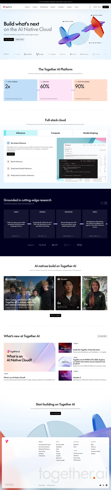

Together AI 主题
Together AI 的 Design.md 主题展示，围绕AI、媒体内容、运营监控、运营系统组织页面。
Open-source AI infrastructure. Technical, blueprint-style design.
AI媒体内容运营监控运营系统数据仪表盘SaaS 产品开发工具浅色界面B2B 产品效率工具专业工具

来源
- 来源
- getdesign.md
- 镜像
- github:VoltAgent/awesome-design-md
- 网站
- https://www.together.ai/
- 详情
- https://getdesign.md/together.ai/design-md
色板
#000000: #000000#959494: #959494#ffffff: #ffffff#010120: #010120#313641: #313641#fc4c02: #fc4c02#ef2cc1: #ef2cc1#bdbbff: #bdbbff#c8f6f9: #c8f6f9#a0a0a0: #a0a0a0#fbbf24: #fbbf24#8a8a8a: #8a8a8a
字体
display: The Futurebody: Intermono: PP Neue Montreal Monohints: The Future,Inter,PP Neue Montreal Mono,Helvetica Neue,ui-monospace,SF Mono,Menlo,Geist Mono,Geist,mono-kickers
圆角
control: 4pxcard: 4pxpreview: 4pxpill: 9999pxsource: design-md
间距
xxs: 2pxxs: 4pxsm: 8pxmd: 12pxlg: 16pxxl: 20px2xl: 24px3xl: 32px4xl: 44px5xl: 48px6xl: 55.2pxsection: 80pxsource: design-md
使用建议
建议
- 建议：Reserve {colors.primary} ({#000000}) for every primary CTA. One black pill per visible viewport — that consistency is the brand's whole conversion story。
- 建议：Set every section eyebrow and button label in {typography.mono-caps-button} / {typography.mono-caps-eyebrow} — uppercase mono, positive tracking。
- 建议：Pair the brand gradient ({colors.accent-orange} → {colors.accent-magenta} → {colors.accent-periwinkle}) at hero scale only. The gradient is the brand chrome; never shrink to icon size。
- 建议：Cycle page surfaces in the {colors.canvas-dark} → {colors.canvas} → {colors.canvas-dark} rhythm; the dark-light contrast carries elevation more than any shadow。
- 建议：Use {rounded.sm} 4 px as the canonical card / button radius across the system; reserve {rounded.full} for the single floating chat-launcher orb。
避免
- 避免：introduce a fifth accent colour. The three-stop gradient + mint pill is the entire decorative palette; new accents flatten the brand。
- 避免：set body paragraphs in the mono face. The mono is for labels only; long-form mono reads as a console log, not as marketing copy。
- 避免：centre-align body paragraphs under a left-aligned display headline. The brand keeps text-block alignment consistent within a copy stack。
- 避免：drop a soft drop-shadow on light-surface cards. The brand uses hairlines and surface contrast for elevation; soft shadows belong only on the floating chat-launcher orb。
- 避免：reduce the brand gradient to a single-colour fill, reorder its stops, or add a fourth stop. The gradient is a fixed object。
查看 DESIGN.md